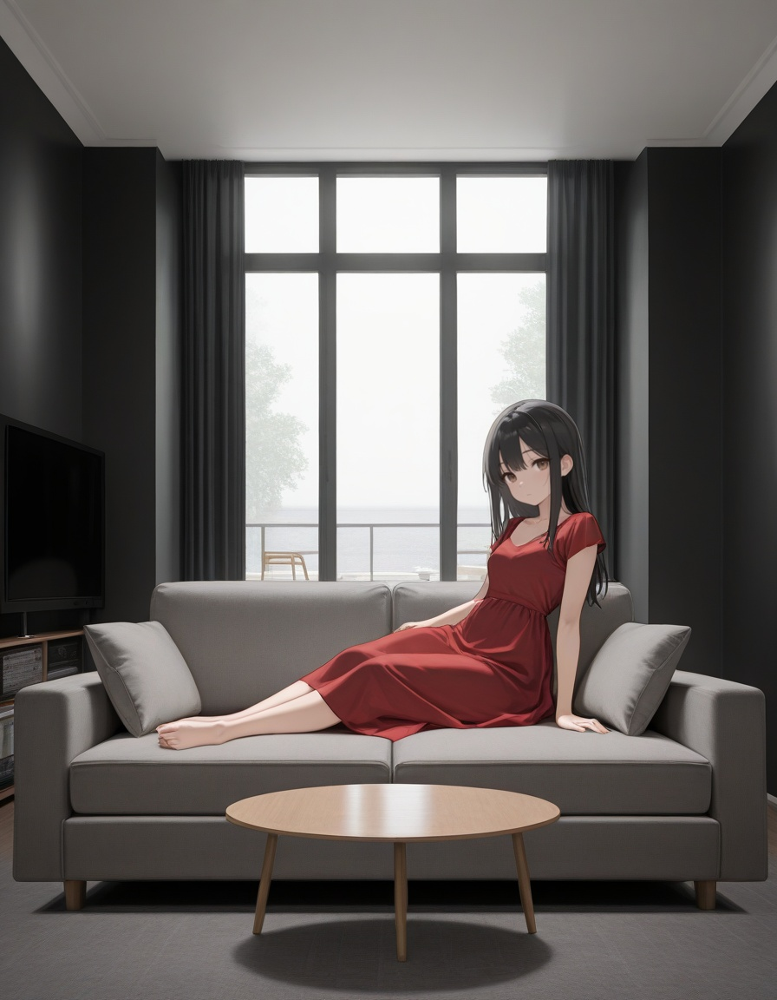
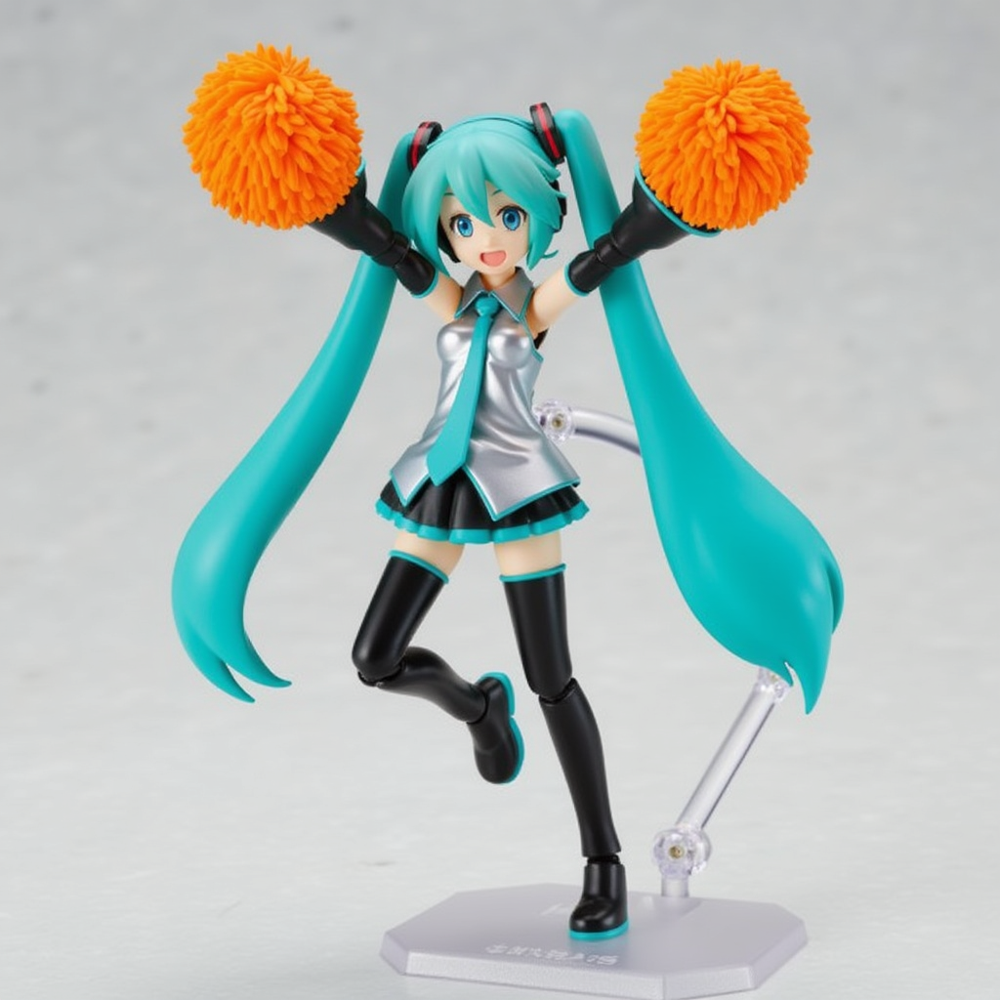
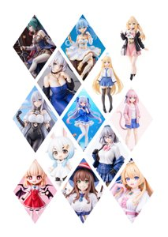
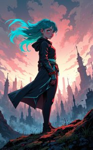
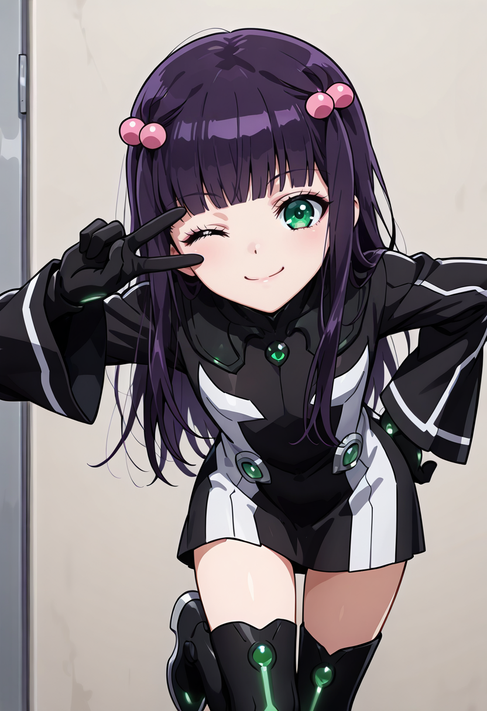

Flux 対応 おすすめLoRA一覧
対応モデルごとに分類されたLoRA一覧です。各カテゴリーを選択してください。全 971 ファイル。
Flux (75 items on this page / Total 175 items)
Flux
その他
Lum__Urusei_Yatsura_2022_Flux_LoRa
「Lum Urusei Yatsura 2022 Flux LoRa」に特化した追加学習モデルです。Stable DiffusionでのAI画像生成にLoRAを導入し、特定要素の再現性を劇的に向上。効率的かつ高品質なビジュアルを求める全てのAI絵師必見のモデルです。
Size: 19,266,432
Flux
キャラ
lxy_000009000
「lxy 000009000」を精密に再現する追加学習モデルです。Stable DiffusionのAI画像生成において、特徴的な容姿や表情をLoRAで安定させて描画。ハイクオリティな特定キャラ画像を生成したい方に最適です。
Size: 171,969,328
Flux
キャラ
majicbeauty1
「majicbeauty1」を精密に再現する追加学習モデルです。Stable DiffusionのAI画像生成において、特徴的な容姿や表情をLoRAで安定させて描画。ハイクオリティな特定キャラ画像を生成したい方に最適です。
Size: 153,264,992
Flux
キャラ
majicflus_v10
「majicflus v10」を精密に再現する追加学習モデルです。Stable DiffusionのAI画像生成において、特徴的な容姿や表情をLoRAで安定させて描画。ハイクオリティな特定キャラ画像を生成したい方に最適です。
Size: 11,901,513,960
Flux
画風
Makoto_Shinkai_style_v1
「Makoto Shinkai style v1」の独特なタッチを反映する追加学習モデル。Stable DiffusionでのAI画像生成で、色彩や質感をLoRAにより一変させます。独創的で芸術性の高い作品を追求するクリエイターにおすすめです。
Size: 171,970,352
Flux
キャラ
MarniePokemonFlux
「MarniePokemonFlux」を精密に再現する追加学習モデルです。Stable DiffusionのAI画像生成において、特徴的な容姿や表情をLoRAで安定させて描画。ハイクオリティな特定キャラ画像を生成したい方に最適です。
Size: 19,285,648
Flux
キャラ
MiaoKaPVC_flux
「MiaoKaPVC flux」を精密に再現する追加学習モデルです。Stable DiffusionのAI画像生成において、特徴的な容姿や表情をLoRAで安定させて描画。ハイクオリティな特定キャラ画像を生成したい方に最適です。
Size: 307,396,648
Flux
キャラ
Mirko
「Mirko」を精密に再現する追加学習モデルです。Stable DiffusionのAI画像生成において、特徴的な容姿や表情をLoRAで安定させて描画。ハイクオリティな特定キャラ画像を生成したい方に最適です。
Size: 19,263,952
Flux
キャラ
Mistoon_Anime_Flux
「Mistoon Anime Flux」を精密に再現する追加学習モデルです。Stable DiffusionのAI画像生成において、特徴的な容姿や表情をLoRAで安定させて描画。ハイクオリティな特定キャラ画像を生成したい方に最適です。
Size: 19,262,320

Flux
キャラ
Mitsuha Miyamizu_40
「Mitsuha Miyamizu 40」を精密に再現する追加学習モデルです。Stable DiffusionのAI画像生成において、特徴的な容姿や表情をLoRAで安定させて描画。ハイクオリティな特定キャラ画像を生成したい方に最適です。
Size: 153,307,864
Flux
キャラ
modern-anime-lora-2
「modern anime lora 2」を精密に再現する追加学習モデルです。Stable DiffusionのAI画像生成において、特徴的な容姿や表情をLoRAで安定させて描画。ハイクオリティな特定キャラ画像を生成したい方に最適です。
Size: 153,272,832
Flux
画風
modern-anime-style
「modern anime style」の独特なタッチを反映する追加学習モデル。Stable DiffusionでのAI画像生成で、色彩や質感をLoRAにより一変させます。独創的で芸術性の高い作品を追求するクリエイターにおすすめです。
Size: 343,805,400

Flux
キャラ
Modern-Retro_Anime-FLUX
「Modern Retro Anime FLUX」を精密に再現する追加学習モデルです。Stable DiffusionのAI画像生成において、特徴的な容姿や表情をLoRAで安定させて描画。ハイクオリティな特定キャラ画像を生成したい方に最適です。
Size: 19,256,928
Flux
キャラ
muk_flux_v1
「muk flux v1」を精密に再現する追加学習モデルです。Stable DiffusionのAI画像生成において、特徴的な容姿や表情をLoRAで安定させて描画。ハイクオリティな特定キャラ画像を生成したい方に最適です。
Size: 153,506,232
Flux
キャラ
murata
「murata」を精密に再現する追加学習モデルです。Stable DiffusionのAI画像生成において、特徴的な容姿や表情をLoRAで安定させて描画。ハイクオリティな特定キャラ画像を生成したい方に最適です。
Size: 19,267,752
Flux
キャラ
Nebris_flux1_v2-000070
「Nebris flux1 v2 000070」を精密に再現する追加学習モデルです。Stable DiffusionのAI画像生成において、特徴的な容姿や表情をLoRAで安定させて描画。ハイクオリティな特定キャラ画像を生成したい方に最適です。
Size: 33,667,336

Flux
キャラ
nepotism_xii
「nepotism xii」を精密に再現する追加学習モデルです。Stable DiffusionのAI画像生成において、特徴的な容姿や表情をLoRAで安定させて描画。ハイクオリティな特定キャラ画像を生成したい方に最適です。
Size: 11,901,516,104
Flux
キャラ
niji_flux
「niji flux」を精密に再現する追加学習モデルです。Stable DiffusionのAI画像生成において、特徴的な容姿や表情をLoRAで安定させて描画。ハイクオリティな特定キャラ画像を生成したい方に最適です。
Size: 171,969,400
Flux
キャラ
noobaiXLXIN_v10
「noobaiXLXIN v10」を精密に再現する追加学習モデルです。Stable DiffusionのAI画像生成において、特徴的な容姿や表情をLoRAで安定させて描画。ハイクオリティな特定キャラ画像を生成したい方に最適です。
Size: 6,938,043,264
Flux
衣装
Nurse_Uniform_Flux-000002
「Nurse Uniform Flux 000002」の衣装を付与できる追加学習モデルです。Stable DiffusionのAI画像生成でLoRAを活用し、細部までこだわり抜いたデザインを固定可能。特定のコスチュームを手軽に再現したい時に重宝します。
Size: 19,264,592
Flux
キャラ
nwsj_flux0924
「nwsj flux0924」を精密に再現する追加学習モデルです。Stable DiffusionのAI画像生成において、特徴的な容姿や表情をLoRAで安定させて描画。ハイクオリティな特定キャラ画像を生成したい方に最適です。
Size: 306,432,664
Flux
キャラ
obE4BABAE69687E7B289E5BD.cbPp
「obE4BABAE69687E7B289E5BD.cbPp」を精密に再現する追加学習モデルです。Stable DiffusionのAI画像生成において、特徴的な容姿や表情をLoRAで安定させて描画。ハイクオリティな特定キャラ画像を生成したい方に最適です。
Size: 19,359,440
Flux
その他
obE58D8AE58699E5AE9EE88296E583.IwJt
「obE58D8AE58699E5AE9EE88296E583.IwJt」に特化した追加学習モデルです。Stable DiffusionでのAI画像生成にLoRAを導入し、特定要素の再現性を劇的に向上。効率的かつ高品質なビジュアルを求める全てのAI絵師必見のモデルです。
Size: 306,478,512
Flux
その他
obE68B8DE7AB8BE5BE97E4BABAE583.nzuU
「obE68B8DE7AB8BE5BE97E4BABAE583.nzuU」に特化した追加学習モデルです。Stable DiffusionでのAI画像生成にLoRAを導入し、特定要素の再現性を劇的に向上。効率的かつ高品質なビジュアルを求める全てのAI絵師必見のモデルです。
Size: 306,483,536

Flux
キャラ
Old Fashioned Celluloid_FLUX
「Old Fashioned Celluloid FLUX」を精密に再現する追加学習モデルです。Stable DiffusionのAI画像生成において、特徴的な容姿や表情をLoRAで安定させて描画。ハイクオリティな特定キャラ画像を生成したい方に最適です。
Size: 79,379,328

Flux
画風
p41nt4n1m3-style-fg-flux-lora
「p41nt4n1m3 style fg flux lora」の独特なタッチを反映する追加学習モデル。Stable DiffusionでのAI画像生成で、色彩や質感をLoRAにより一変させます。独創的で芸術性の高い作品を追求するクリエイターにおすすめです。
Size: 18,209,252
Flux
キャラ
pami_flux_v1-5000
「pami flux v1 5000」を精密に再現する追加学習モデルです。Stable DiffusionのAI画像生成において、特徴的な容姿や表情をLoRAで安定させて描画。ハイクオリティな特定キャラ画像を生成したい方に最適です。
Size: 179,594,584
Flux
キャラ
PillowMasturbationFlux
「PillowMasturbationFlux」を精密に再現する追加学習モデルです。Stable DiffusionのAI画像生成において、特徴的な容姿や表情をLoRAで安定させて描画。ハイクオリティな特定キャラ画像を生成したい方に最適です。
Size: 38,422,568

Flux
画風
PinkieMechaLuxFLUX
「PinkieMechaLuxFLUX」の独特なタッチを反映する追加学習モデル。Stable DiffusionでのAI画像生成で、色彩や質感をLoRAにより一変させます。独創的で芸術性の高い作品を追求するクリエイターにおすすめです。
Size: 57,548,080

Flux
画風
PinkieSoftcoreAnimeFLUX
「PinkieSoftcoreAnimeFLUX」の独特なタッチを反映する追加学習モデル。Stable DiffusionでのAI画像生成で、色彩や質感をLoRAにより一変させます。独創的で芸術性の高い作品を追求するクリエイターにおすすめです。
Size: 76,691,928
Flux
キャラ
Pointing_Gun_at_Viewer
「Pointing Gun at Viewer」を精密に再現する追加学習モデルです。Stable DiffusionのAI画像生成において、特徴的な容姿や表情をLoRAで安定させて描画。ハイクオリティな特定キャラ画像を生成したい方に最適です。
Size: 19,260,784
Flux
キャラ
pokemon
「pokemon」を精密に再現する追加学習モデルです。Stable DiffusionのAI画像生成において、特徴的な容姿や表情をLoRAで安定させて描画。ハイクオリティな特定キャラ画像を生成したい方に最適です。
Size: 171,969,392
Flux
画風
ps2-style
「ps2 style」の独特なタッチを反映する追加学習モデル。Stable DiffusionでのAI画像生成で、色彩や質感をLoRAにより一変させます。独創的で芸術性の高い作品を追求するクリエイターにおすすめです。
Size: 39,772,440
Flux
キャラ
PulldownFluxV1
「PulldownFluxV1」を精密に再現する追加学習モデルです。Stable DiffusionのAI画像生成において、特徴的な容姿や表情をLoRAで安定させて描画。ハイクオリティな特定キャラ画像を生成したい方に最適です。
Size: 38,426,488

Flux
キャラ
pvc
「pvc」を精密に再現する追加学習モデルです。Stable DiffusionのAI画像生成において、特徴的な容姿や表情をLoRAで安定させて描画。ハイクオリティな特定キャラ画像を生成したい方に最適です。
Size: 19,259,576

Flux
画風
PVCstyle
「PVCstyle」の独特なタッチを反映する追加学習モデル。Stable DiffusionでのAI画像生成で、色彩や質感をLoRAにより一変させます。独創的で芸術性の高い作品を追求するクリエイターにおすすめです。
Size: 76,712,008
Flux
キャラ
Qipao-flux-Cos_epoch_10
「Qipao flux Cos epoch 10」を精密に再現する追加学習モデルです。Stable DiffusionのAI画像生成において、特徴的な容姿や表情をLoRAで安定させて描画。ハイクオリティな特定キャラ画像を生成したい方に最適です。
Size: 19,293,424
Flux
その他
range_murata_flux_lora_v1_000003000
「range murata flux lora v1 000003000」に特化した追加学習モデルです。Stable DiffusionでのAI画像生成にLoRAを導入し、特定要素の再現性を劇的に向上。効率的かつ高品質なビジュアルを求める全てのAI絵師必見のモデルです。
Size: 171,969,432
Flux
画風
rca_style_v1.1
「rca style v1.1」の独特なタッチを反映する追加学習モデル。Stable DiffusionでのAI画像生成で、色彩や質感をLoRAにより一変させます。独創的で芸術性の高い作品を追求するクリエイターにおすすめです。
Size: 171,969,488

Flux
キャラ
RealisticAnimeFlux_v1
「RealisticAnimeFlux v1」を精密に再現する追加学習モデルです。Stable DiffusionのAI画像生成において、特徴的な容姿や表情をLoRAで安定させて描画。ハイクオリティな特定キャラ画像を生成したい方に最適です。
Size: 38,434,152
Flux
キャラ
rei-eva
「rei eva」を精密に再現する追加学習モデルです。Stable DiffusionのAI画像生成において、特徴的な容姿や表情をLoRAで安定させて描画。ハイクオリティな特定キャラ画像を生成したい方に最適です。
Size: 39,769,024
Flux
キャラ
remilia_3000
「remilia 3000」を精密に再現する追加学習モデルです。Stable DiffusionのAI画像生成において、特徴的な容姿や表情をLoRAで安定させて描画。ハイクオリティな特定キャラ画像を生成したい方に最適です。
Size: 359,102,760
Flux
キャラ
Retro_Anime
「Retro Anime」を精密に再現する追加学習モデルです。Stable DiffusionのAI画像生成において、特徴的な容姿や表情をLoRAで安定させて描画。ハイクオリティな特定キャラ画像を生成したい方に最適です。
Size: 19,338,912

Flux
キャラ
RM_AnimeNiji_v0.3
「RM AnimeNiji v0.3」を精密に再現する追加学習モデルです。Stable DiffusionのAI画像生成において、特徴的な容姿や表情をLoRAで安定させて描画。ハイクオリティな特定キャラ画像を生成したい方に最適です。
Size: 106,383,164
Flux
キャラ
RPGv6-itr15
「RPGv6 itr15」を精密に再現する追加学習モデルです。Stable DiffusionのAI画像生成において、特徴的な容姿や表情をLoRAで安定させて描画。ハイクオリティな特定キャラ画像を生成したい方に最適です。
Size: 179,378,584

Flux
キャラ
Sadamoto Yoshiyuki_FLUX
「Sadamoto Yoshiyuki FLUX」を精密に再現する追加学習モデルです。Stable DiffusionのAI画像生成において、特徴的な容姿や表情をLoRAで安定させて描画。ハイクオリティな特定キャラ画像を生成したい方に最適です。
Size: 79,392,272

Flux
キャラ
Sailor_Moon_Flux
「Sailor Moon Flux」を精密に再現する追加学習モデルです。Stable DiffusionのAI画像生成において、特徴的な容姿や表情をLoRAで安定させて描画。ハイクオリティな特定キャラ画像を生成したい方に最適です。
Size: 19,257,328
Flux
キャラ
Shiny_skin_FLUX
「Shiny skin FLUX」を精密に再現する追加学習モデルです。Stable DiffusionのAI画像生成において、特徴的な容姿や表情をLoRAで安定させて描画。ハイクオリティな特定キャラ画像を生成したい方に最適です。
Size: 19,269,480
Flux
画風
Simple_Illustration_Style-000004
「Simple Illustration Style 000004」の独特なタッチを反映する追加学習モデル。Stable DiffusionでのAI画像生成で、色彩や質感をLoRAにより一変させます。独創的で芸術性の高い作品を追求するクリエイターにおすすめです。
Size: 19,257,128
Flux
キャラ
slrmn_flux_EliPot
「slrmn flux EliPot」を精密に再現する追加学習モデルです。Stable DiffusionのAI画像生成において、特徴的な容姿や表情をLoRAで安定させて描画。ハイクオリティな特定キャラ画像を生成したい方に最適です。
Size: 19,272,792
Flux
キャラ
SplitColorHair
「SplitColorHair」を精密に再現する追加学習モデルです。Stable DiffusionのAI画像生成において、特徴的な容姿や表情をLoRAで安定させて描画。ハイクオリティな特定キャラ画像を生成したい方に最適です。
Size: 143,708,912
Flux
キャラ
springIL_v10
「springIL v10」を精密に再現する追加学習モデルです。Stable DiffusionのAI画像生成において、特徴的な容姿や表情をLoRAで安定させて描画。ハイクオリティな特定キャラ画像を生成したい方に最適です。
Size: 6,938,045,290
Flux
その他
sref12506xx74484711_flux_v1_000001500
「sref12506xx74484711 flux v1 000001500」に特化した追加学習モデルです。Stable DiffusionでのAI画像生成にLoRAを導入し、特定要素の再現性を劇的に向上。効率的かつ高品質なビジュアルを求める全てのAI絵師必見のモデルです。
Size: 171,969,440
Flux
背景
Street_Fighter_-_Chun-Li
「Street Fighter Chun Li」のロケーションを生成する追加学習モデル。Stable DiffusionのAI画像生成において、LoRAが背景の密度と臨場感を劇的に向上させます。作品の没入感を高めたい背景重視の制作に最適です。
Size: 38,462,800

Flux
その他
Such an Asian Skin Beauty_v2.0
「Such an Asian Skin Beauty v2.0」に特化した追加学習モデルです。Stable DiffusionでのAI画像生成にLoRAを導入し、特定要素の再現性を劇的に向上。効率的かつ高品質なビジュアルを求める全てのAI絵師必見のモデルです。
Size: 171,969,509

Flux
キャラ
SuchHorriGirl v1.5_000001250
「SuchHorriGirl v1.5 000001250」を精密に再現する追加学習モデルです。Stable DiffusionのAI画像生成において、特徴的な容姿や表情をLoRAで安定させて描画。ハイクオリティな特定キャラ画像を生成したい方に最適です。
Size: 171,969,505

Flux
キャラ
Takemi Tae v2_epoch_15
「Takemi Tae v2 epoch 15」を精密に再現する追加学習モデルです。Stable DiffusionのAI画像生成において、特徴的な容姿や表情をLoRAで安定させて描画。ハイクオリティな特定キャラ画像を生成したい方に最適です。
Size: 38,407,736
Flux
キャラ
Test_flux_train
「Test flux train」を精密に再現する追加学習モデルです。Stable DiffusionのAI画像生成において、特徴的な容姿や表情をLoRAで安定させて描画。ハイクオリティな特定キャラ画像を生成したい方に最適です。
Size: 76,708,904
Flux
画風
Tifa-Lockhart-Final-Fantasy-Remake-Intergrade-Flux
「Tifa Lockhart Final Fantasy Remake Intergrade Flux」の独特なタッチを反映する追加学習モデル。Stable DiffusionでのAI画像生成で、色彩や質感をLoRAにより一変させます。独創的で芸術性の高い作品を追求するクリエイターにおすすめです。
Size: 306,429,184
Flux
キャラ
Train_Hoshino_AI
「Train Hoshino AI」を精密に再現する追加学習モデルです。Stable DiffusionのAI画像生成において、特徴的な容姿や表情をLoRAで安定させて描画。ハイクオリティな特定キャラ画像を生成したい方に最適です。
Size: 153,284,728
Flux
キャラ
Transhuman_Flux
「Transhuman Flux」を精密に再現する追加学習モデルです。Stable DiffusionのAI画像生成において、特徴的な容姿や表情をLoRAで安定させて描画。ハイクオリティな特定キャラ画像を生成したい方に最適です。
Size: 306,426,712

Flux
キャラ
Tsukasa Hojo_FLUX
「Tsukasa Hojo FLUX」を精密に再現する追加学習モデルです。Stable DiffusionのAI画像生成において、特徴的な容姿や表情をLoRAで安定させて描画。ハイクオリティな特定キャラ画像を生成したい方に最適です。
Size: 79,380,984

Flux
キャラ
ts_f1d_civchan_20250331_2200
「ts f1d civchan 20250331 2200」を精密に再現する追加学習モデルです。Stable DiffusionのAI画像生成において、特徴的な容姿や表情をLoRAで安定させて描画。ハイクオリティな特定キャラ画像を生成したい方に最適です。
Size: 39,759,696

Flux
画風
Unfazed Flat Colored flux v1.0
「Unfazed Flat Colored flux v1.0」の独特なタッチを反映する追加学習モデル。Stable DiffusionでのAI画像生成で、色彩や質感をLoRAにより一変させます。独創的で芸術性の高い作品を追求するクリエイターにおすすめです。
Size: 612,748,592
Flux
キャラ
urushihara3_resize
「urushihara3 resize」を精密に再現する追加学習モデルです。Stable DiffusionのAI画像生成において、特徴的な容姿や表情をLoRAで安定させて描画。ハイクオリティな特定キャラ画像を生成したい方に最適です。
Size: 20,960,912
Flux
キャラ
vxpIllustrious20_beta2
「vxpIllustrious20 beta2」を精密に再現する追加学習モデルです。Stable DiffusionのAI画像生成において、特徴的な容姿や表情をLoRAで安定させて描画。ハイクオリティな特定キャラ画像を生成したい方に最適です。
Size: 6,938,060,178
Flux
キャラ
waiboobaiIL_v10
「waiboobaiIL v10」を精密に再現する追加学習モデルです。Stable DiffusionのAI画像生成において、特徴的な容姿や表情をLoRAで安定させて描画。ハイクオリティな特定キャラ画像を生成したい方に最適です。
Size: 6,938,040,714
Flux
ポーズ
Wariza_Sitting_Flux_-_V4
「Wariza Sitting Flux V4」のポーズを制御する追加学習モデル。Stable DiffusionでのAI画像生成において、LoRAが構図の再現性を劇的に向上。躍動感のあるポーズや特定の構図を狙って描きたい方に強くおすすめします。
Size: 153,311,696
Flux
その他
WetWetWet_flux_lora_v1_000005500
「WetWetWet flux lora v1 000005500」に特化した追加学習モデルです。Stable DiffusionでのAI画像生成にLoRAを導入し、特定要素の再現性を劇的に向上。効率的かつ高品質なビジュアルを求める全てのAI絵師必見のモデルです。
Size: 257,887,496
Flux
キャラ
xjie-gufeng
「xjie gufeng」を精密に再現する追加学習モデルです。Stable DiffusionのAI画像生成において、特徴的な容姿や表情をLoRAで安定させて描画。ハイクオリティな特定キャラ画像を生成したい方に最適です。
Size: 306,426,864

Flux
キャラ
Yabuki Kentarou_FLUX
「Yabuki Kentarou FLUX」を精密に再現する追加学習モデルです。Stable DiffusionのAI画像生成において、特徴的な容姿や表情をLoRAで安定させて描画。ハイクオリティな特定キャラ画像を生成したい方に最適です。
Size: 79,395,216
Flux
キャラ
yoneyama_v4
「yoneyama v4」を精密に再現する追加学習モデルです。Stable DiffusionのAI画像生成において、特徴的な容姿や表情をLoRAで安定させて描画。ハイクオリティな特定キャラ画像を生成したい方に最適です。
Size: 1,613,892,136

Flux
キャラ
zyd232_ChineseGirl_Flux1-Krea-dev_v1_2
「zyd232 ChineseGirl Flux1 Krea dev v1 2」を精密に再現する追加学習モデルです。Stable DiffusionのAI画像生成において、特徴的な容姿や表情をLoRAで安定させて描画。ハイクオリティな特定キャラ画像を生成したい方に最適です。
Size: 9,685,520
Flux
キャラ
[flux]wlop-nai3-lora
「[flux]wlop nai3 lora」を精密に再現する追加学習モデルです。Stable DiffusionのAI画像生成において、特徴的な容姿や表情をLoRAで安定させて描画。ハイクオリティな特定キャラ画像を生成したい方に最適です。
Size: 306,470,944
Flux
キャラ
手办Flux
「手办Flux」を精密に再現する追加学習モデルです。Stable DiffusionのAI画像生成において、特徴的な容姿や表情をLoRAで安定させて描画。ハイクオリティな特定キャラ画像を生成したい方に最適です。
Size: 306,440,960